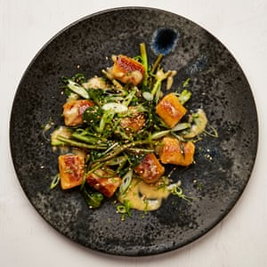

Swede gnocchi with miso butter and morning glory

Heat the oven to 240C (220C fan)/465F/gas 9. Wrap each potato in foil and bake for an hour, or until cooked through. Peel the potatoes while they’re still warm (discard the skins), then mash into a bowl with a potato ricer or masher – you should end up with 230g of smooth mash.
When the potatoes are in the oven, put the diced swede on an oven tray lined with baking paper. Toss in half a tablespoon of olive oil, cover with foil and bake alongside the potatoes for 30 minutes, or until cooked through. Transfer to a food processor, add two tablespoons of oil and blitz smooth, scraping down the sides of the bowl as you go – you should end up with 320g of mashed swede. Put the swedes in the same bowl as the potatoes, then mix in the egg yolk and a quarter-teaspoon of salt. Fold in the flour until there are no lumps, then transfer to a piping bag and refrigerate for an hour.
Snip the end of the bag to make a 2cm-wide opening. Bring a litre and a half of water to a boil in a medium pan, add two teaspoons of salt, then turn down to a simmer. Cook the gnocchi in about five batches, so as not to overcrowd the pan. Pipe 3cm pieces of the gnocchi mix into the water, using a small, sharp knife quickly to release them into the water. Cook for two to three minutes, or until they float to the top, then lift out with a slotted spoon and transfer to an oven tray lined with baking paper, spacing the gnocchi well apart.
Once all the gnocchi are cooked, drizzle over two teaspoons of oil and refrigerate for 20 minutes, until slightly chilled; this will help them keep their shape when they’re fried.
Bring the stock to a boil in a large saute pan, and cook down for 10-12 minutes, until reduced to 200ml. Blanch the morning glory in the hot stock for two minutes, until tender, then lift out with a slotted spoon and roughly cut into halves (skip this step if using spinach; add that raw to the pan later). Return the pan to a medium heat and whisk in the miso, lime juice, ginger and butter, and cook, whisking, for three minutes, until the butter melts and the sauce is smooth and slightly thickened. Do not let it boil or it will split.
Heat the remaining tablespoon and a half of oil in a large frying pan on a medium-high heat. Once very hot, add half the gnocchi and fry for a minute or two on each side, until nicely browned. Transfer to a plate and repeat with the remaining gnocchi.
Put the gnocchi and morning glory (or raw spinach) in the pan with the miso sauce and gently heat through for a minute (if using spinach, until it has wilted). Divide between four plates, sprinkle with the lime zest, spring onions and sesame seeds, and serve at once.